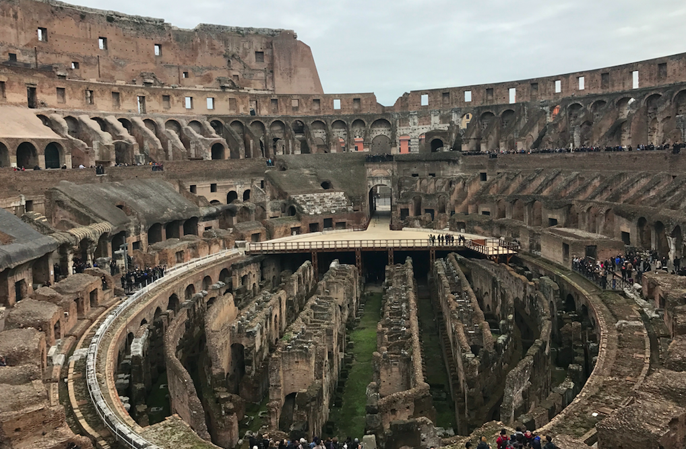

Segundo día
Comenzamos el tour por el Foro Romano. Era la zona central de la ciudad de Roma, donde se encontraban las instituciones de gobierno, mercado y religión. Pudimos conocer la historia de la Antigua Roma y ver los restos y ruinas como el Templo de Cástor y Pólux, Templo de Rómulo, Templo de Vesta, Templo de Venus y Roma, el Arco de Tito… Después, nos acercamos al Coliseo y cuando lo ves es cuando te das cuenta de lo pequeño que te puedes sentir ante algo tan grande.
Al terminar el tour decidimos ir a ver la Bocca della Verità, pero como no podía ser de otra forma antes nos tuvimos que perder y dar un buen rodeo. Nos quedamos con la sensación de que en fotos parecía más de lo que realmente es, aunque no estuvo mal.
Cruzamos uno de los puentes que nos llevaba al barrio del Trastevere para comer, descansamos un poco y nos colamos en el tranvía de vuelta para aprovechar las últimas horas de la tarde.
Vimos más ruinas, algunas habitadas por gatos y caminando llegamos al Coliseo y lo admiramos al anochecer. Ya sólo nos quedaba por ver la Basílica de Santa María la Mayor, que quedaba a dos calles del hotel.
Cenar y descansar. Nuestro viaje había terminado.